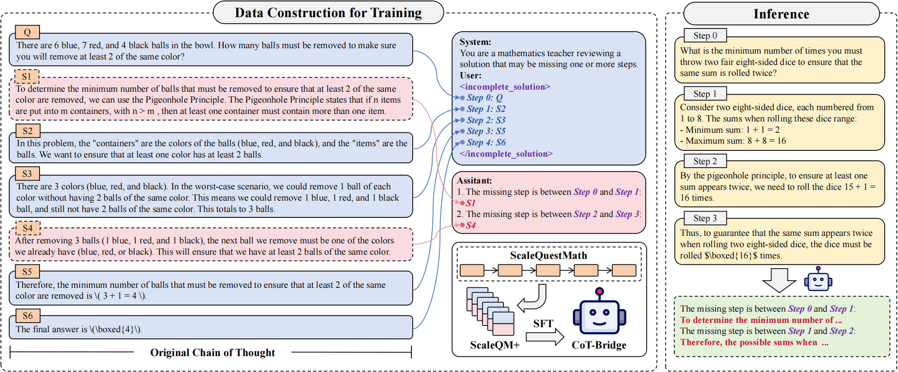
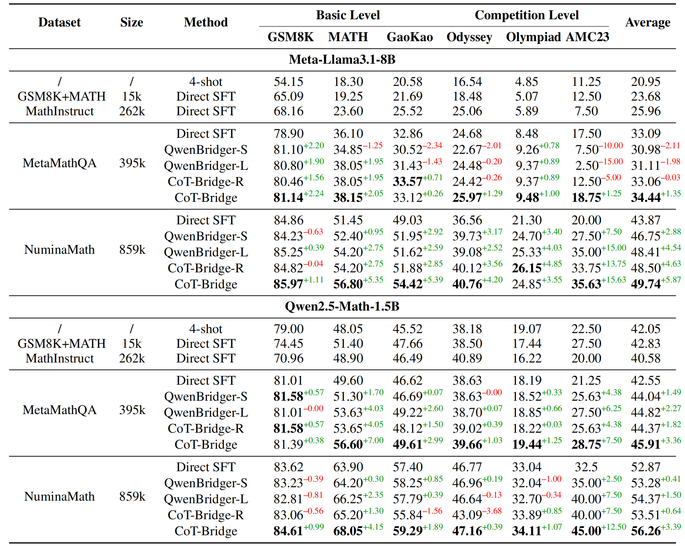

Large language models (LLMs) have achieved remarkable progress on mathematical tasks through Chain-of-Thought (CoT) reasoning. However, existing mathematical CoT datasets often suffer from Thought Leaps due to experts omitting intermediate steps, which negatively impacts model learning and generalization. We propose the CoT Thought Leap Bridge Task, which aims to automatically detect leaps and generate missing intermediate reasoning steps to restore the completeness and coherence of CoT. To facilitate this, we constructed a specialized training dataset called ScaleQM+, based on the structured ScaleQuestMath dataset, and trained CoT-Bridge to bridge thought leaps. Through comprehensive experiments on mathematical reasoning benchmarks, we demonstrate that models fine-tuned on bridged datasets consistently outperform those trained on original datasets, with improvements of up to +5.87% on NuminaMath. Our approach effectively enhances distilled data (+3.02%) and provides better starting points for reinforcement learning (+3.1%), functioning as a plug-and-play module compatible with existing optimization techniques. Furthermore, CoT-Bridge demonstrate improved generalization to out-of-domain logical reasoning tasks, confirming that enhancing reasoning completeness yields broadly applicable benefits.
To address Thought Leaps in Chain-of-Thought reasoning, we first construct training data (ScaleQM+) by removing steps from complete reasoning chains. Subsequently, the CoT-Bridge model, trained on this data, intelligently identifies and generates these missing intermediate steps. This process repairs incomplete reasoning chains, thereby enhancing the quality of CoT data and improving the model's learning efficiency.
Illustration of our work. The left panel shows data construction for training, where we strategically remove intermediate steps (e.g., between Step 0 and Step 1, or Step 2 and Step 3) from complete reasoning chains in ScaleQuestMath to create ScaleQM+ with Thought Leaps. The right panel demonstrates inference, where CoT-Bridge identifies gaps and generates appropriate intermediate steps to restore coherence in reasoning.
To evaluate the effectiveness of CoT-Bridge, we conducted Supervised Fine-Tuning (SFT) experiments on prominent LLMs (Llama3.1-8B, Qwen2.5-Math-1.5B) using datasets including MetaMathQA and NuminaMath. Models trained with data enhanced by CoT-Bridge demonstrated significant performance improvements across various mathematical benchmarks (e.g., up to +5.87% on NuminaMath). This validates the efficacy of bridging thought leaps in enhancing reasoning capabilities.
Main results (%) on mathematical benchmarks. MATH, GaoKao, Odyssey, and Olympiad correspond to the MATH500, GaoKao2023EN, MathOdyssey, and OlympiadBenchEN benchmarks, respectively. QwenBridger-S and QwenBridger-L represent zero-shot bridging based on Qwen2.5-Instruct-7B and Qwen2.5-Instruct-72B, respectively. CoT-Bridge-R stands for CoT-Bridge-Random.
BibTex Code Here